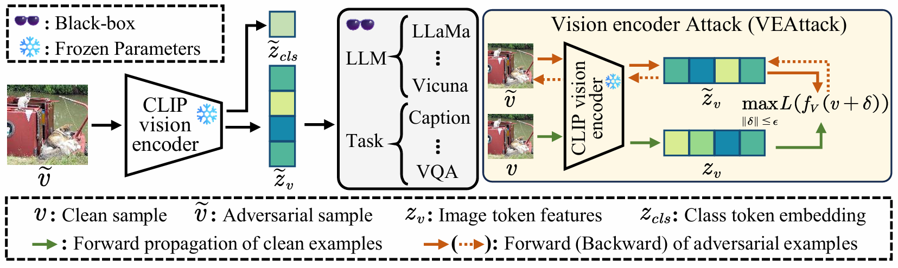
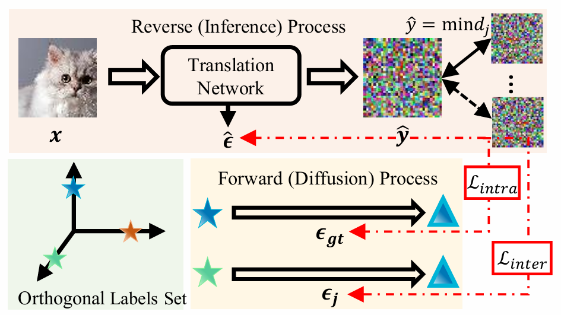
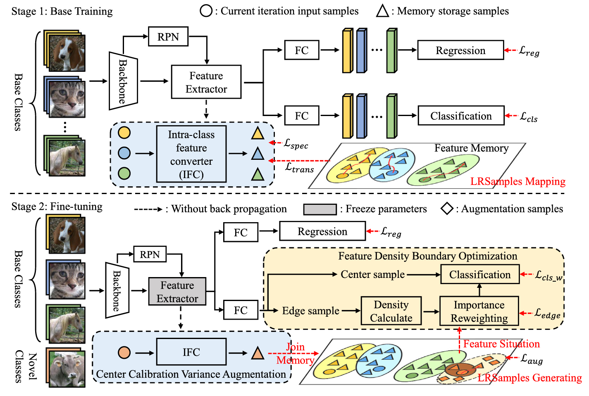
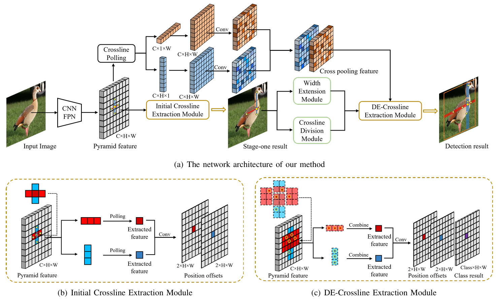
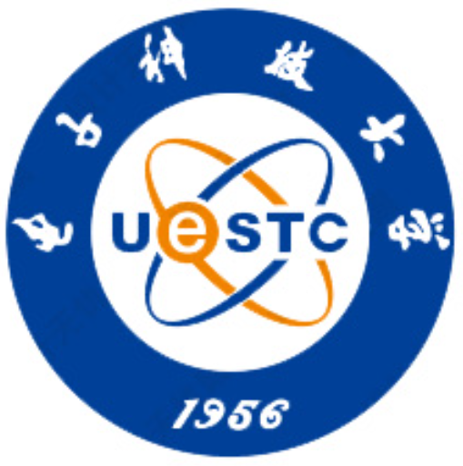

🔥What's New
- 2026/01/28 One paper got accepted by ICLR 2026! Link here: VEAttack. See you in Rio de Janeiro, Brazil!
- 2025/04/11 One paper got accepted by AAAI 2025! Link here: IDC
- 2024/09/01 I will start my Ph.D degree at City University of Hong Kong. See you in Hong Kong!
|
|

|
VEAttack: Downstream-agnostic Vision Encoder Attack against Large Vision Language Models
Hefei Mei, Zirui Wang, Shen You, Minjing Dong, Chang Xu
International Conference on Learning Representations (ICLR-2026)
While existing effective attacks always focus on task-specific white-box settings, these approaches are limited in the context of LVLMs, which are designed for diverse downstream tasks and require expensive full-model gradient computations. Motivated by the pivotal role and wide adoption of the vision encoder in LVLMs, we propose a simple yet effective Vision Encoder Attack (VEAttack), which targets the vision encoder of LVLMs only.
|
|

|
Efficient Image-to-Image Diffusion Classifier for Adversarial Robustness
Hefei Mei, Minjing Dong, Chang Xu
AAAI Conference on Artificial Intelligence (AAAI-2025)
We introduce an efficient Image-to-Image diffusion classifier with a pruned U-Net structure and reduced diffusion timesteps. Besides the framework, we redesign the optimization objective of diffusion models to fit the target of image classification, where a new classification loss is incorporated in the DM-based image translation framework to distinguish the generated label from those of other classes. We conduct sufficient evaluations of the proposed classifier under various attacks on popular benchmarks.
|
|

|
GRSDet: Learning to Generate Local Reverse Samples for Few-shot Object Detection
Hefei Mei, Taijin Zhao, Shiyuan Tang, Heqian Qiu, Lanxiao Wang, Minjian Zhang, Fanman Meng, Hongliang Li
Neurocomputing
We consider the conversion relationship between non-similar samples of the same category (Local Reverse Samples, LRSamples) in the base class can be learned and also transferred to the novel class. So we propose the selection rule and intra-class feature converter (IFC) of LRSamples in our Center Calibration Variance Augmentation (CCVA) module to adaptively adjust the center position of the novel class distribution for FSOD. Moreover, we propose a Feature Density Boundary Optimization (FDBO) module to adaptively adjust the importance of samples depending on their distance from the decision boundary.
|
|

|
DE-CrossDet: Divisible and Extensible Crossline Representation for Object Detection
Hefei Mei, Hongliang Li, Heqian Qiu, Jianhua Cui, Longrong Yang
IEEE International Conference on Visual Communications and Image Processing (VCIP-2022)
We present a new feature extraction method, DE-Crossline, which can enhance the original crossline representation to capture more accurate object information. Specifically, we divide the crossline into several segments, each of which extracts the maximum activation key point respectively to reduce the impact of noise mentioned above. Furthermore, considering various shapes and sizes of objects, we design a Deformable Width Extension Module to learn a suitable width of each crossline, so as to capture richer object information.
|
|
City University of Hong Kong
Hong Kong
2024.09 - present
Ph.D. in Computer Science
GPA: 4.15 / 4.30
Supervisor: Prof. Minjing Dong
|
|  |
University of Electronic Science and Technology of China
Chengdu, China
2021.09 - 2024.06
M.S. in Information and Communication Engineering
GPA: 3.88 / 4.00
Supervisor: Prof. Hongliang Li
|
|
University of Electronic Science and Technology of China
Chengdu, China
2017.09 - 2021.06
B.S. in Electronic and Information Engineering
GPA: 3.92 / 4.00
|
Service
- Journal Reviewer: IEEE Transactions on Pattern Analysis and Machine Intelligence, IEEE Transactions on Multimedia
- Conference Reviewer: NeurIPS, ICML, ICLR, CVPR, ECCV, AAAI, AISTATS
|
Teaching
- 2026, Lab Tutor, CS2468: Data Structures and Data Management, Cityu University of Hong Kong
- 2025, Lab Tutor, CS1302: Introduction to Computer Programming, Cityu University of Hong Kong
- 2024, Teaching Assistant, CS1302: Introduction to Computer Programming, Cityu University of Hong Kong
|
Awards
- National Scholarship in 2019, 2020, 2022
- CityU Outstanding Academic Performance Award in 2025
- First Prize of Chinese Graduate Electronic Design Competition in 2023
- Second Prize of Chinese Graduate Mathematical Modeling Competition in 2021
- Meritorious Winner of U.S. Mathematical Contest in Modeling in 2019
|
Miscellaneous
- Though excellence is a tough pursuit, I've come a long way to get to you. I try to stay positive and resilient in the face of challenges. If you're having a tough time and would like someone to talk to, feel free to reach out!
- I like hiking, astronomy and making new friends.
- I like all cute animals like Samoyed, Border Collie, Ragdoll.
- I like music, especially piano.
|
|
{kind=link}